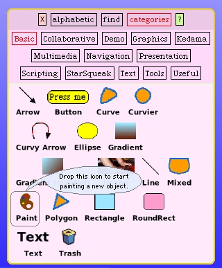
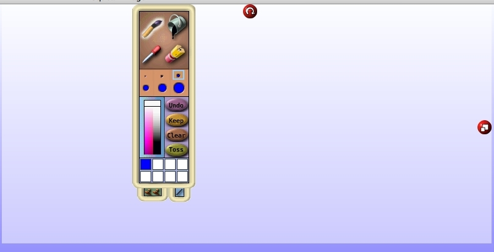

Drawing The Laser Beam
The game is fun without the laser beam being visible. You can find yourself imagining the path of the laser beam as it traverses our mirror cells and makes its way, hopefully, to the target cell. With this enhancement we'll figure out how to draw the laser beam itself.
I'm going to begin with basics here and take you through the steps of creating a visual laser beam exactly as I do the work. The tutorial will trace my steps and hopefully not take us down any paths with mistakes.
I'm going to begin by opening up a RectangleMorph, changing it's size to be pretty large and putting it in the upper left area of my development environment. I also opened up an inspector on it and set its color to be white. We're going to draw our laser beam on this panel.
Next, I opened up the "objects" tool from the World menu.
Drag the "paint" tool to the upper right corner of your work environment. The painting tool appears.
You can move the pallette by draging its border to get it out of the way. I then changed the color to a light yellow shade and picked the fattest paintbrush available.
Using several passes with the painbrush I painted a wide line across the drawing area. Note that I made no effort to keep the edges smooth.

Making the paintbrush color nearly white, I made two more lines outside the pale yellow band drawn before. I did make an effort to overlap the yellow area so as not to have any gaps.